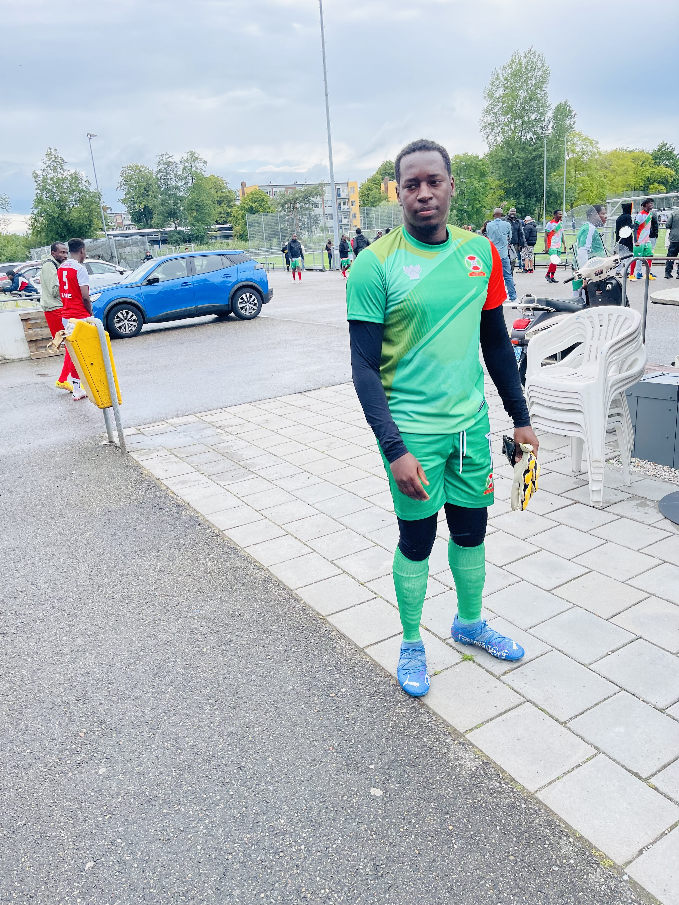
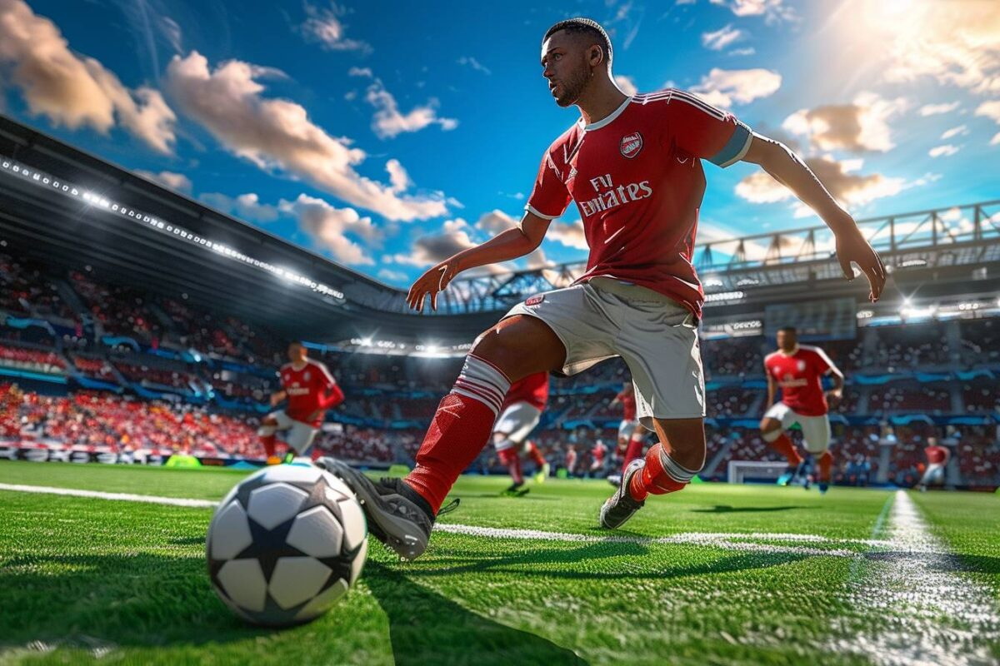

Mijn Hobby's
 Voetbal is een van mijn grootste hobby's. Ik speel graag met mijn vrienden, zowel op het veld als online. Voor mij is het niet alleen leuk, maar ook een manier om mijn techniek te verbeteren en fit te blijven. Elke keer dat ik op het veld sta, voel ik die passie voor het spel en geniet ik er volop van.
Naast voetbal ben ik dol op videospellen spelen met mijn vrienden, thuis of online. Vooral voetbalgames geven me veel plezier. Het helpt me om te ontspannen, vooral wanneer ik wat gestrest ben. Samen met vrienden lachen en plezier maken tijdens het spelen geeft me altijd een goed gevoel
Mijn Interesses
Een van mijn grootste doelen is om mijn opleiding af te ronden en mijn diploma te behalen. Dit zal me helpen verder te komen in mijn toekomst. Daarnaast droom ik ervan om een professionele voetballer te worden, omdat voetbal echt mijn passie is.
Soms, wanneer ik alleen aan het wandelen ben of in de bus zit, luister ik graag naar muziek. Muziek helpt me ontspannen en mijn gedachten te ordenen. Het is een manier om even weg te zijn van alles en mijn hoofd leeg te maken.
Mijn Toekomstige Doelen
- Diploma behalen
- Professionele voetballer worden
- Mijn vaardigheden op en buiten het veld verbeteren